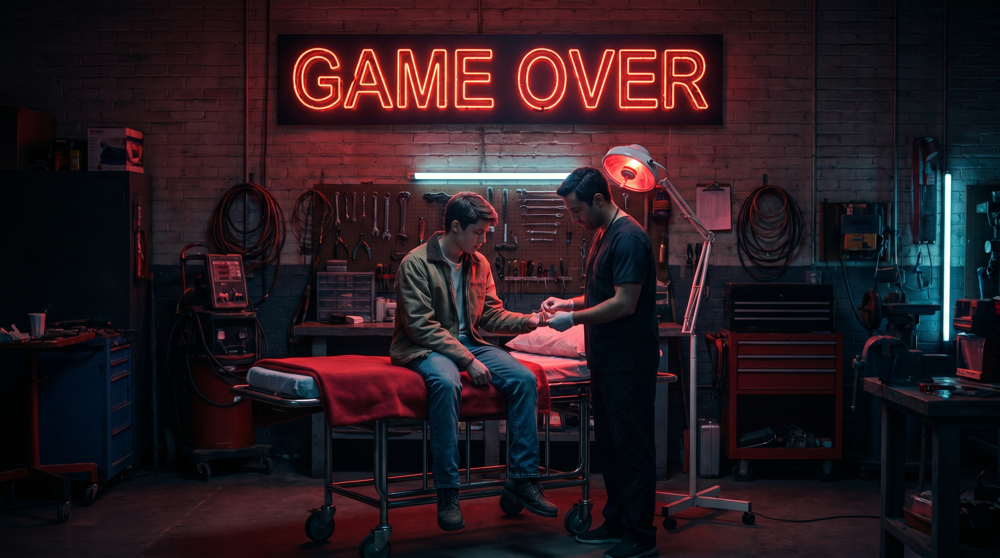
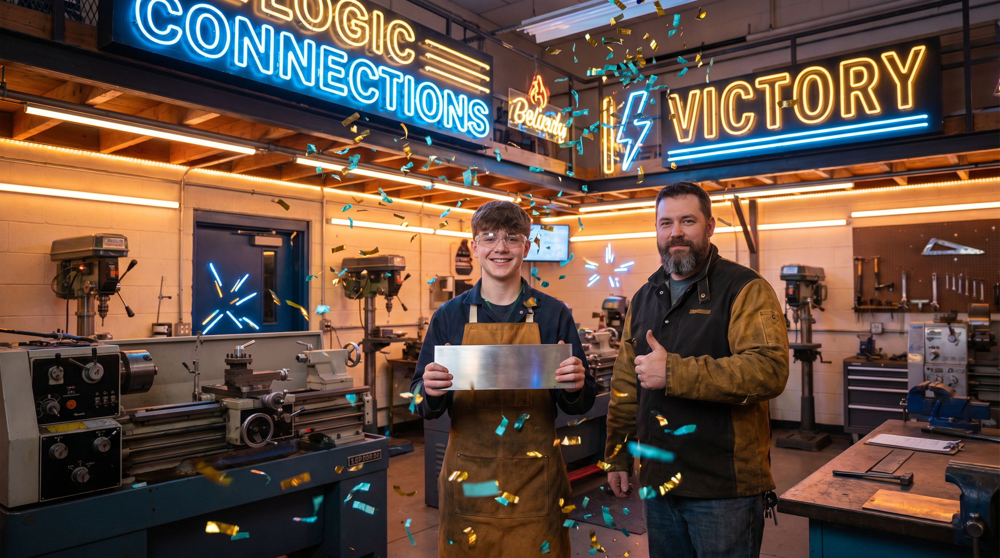

⚡ DrillMaster
De Werkplaats Missie · Logic Connections
🎮 Start de Missie
Jouw naam
Jouw klas
⚡ Start de Missie
❤️❤️❤️ 3 hartjes
📋 17 stappen
⚠️ Echte gevolgen
⚡ DrillMaster
❤️❤️❤️
⚡ 0 XP
Scene 1 / 17

GAME OVER
🔄 Opnieuw proberen

MISSIE VOLTOOID!
🔄 Opnieuw spelen